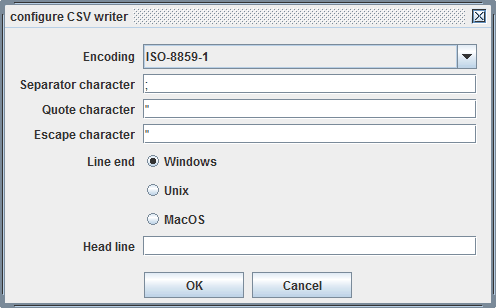

CSV writer

Topic content
Description
The CSV writer is a serializer that transforms a structured Message representing a list of records into a CSV text stream.
Creation
A CSV writer is created, like all other serializers, by selecting it in the according Stream channel.
While configuring the Stream channel reading the CSV you may select an appropriate Message type describing the structure of the CSV. If you select such a message type, the element names of the output message are compared with the names of the declared fields within the message type. Also in this case in the output message fields may be missing, in this case the serializer adds empty fields to the output.
If no message type was selected for the CSV writer, then the output message must contain always the expected number of fields to write to the CSV. If a field value is not available then the message must contain an empty element for that field.
Configuration
Apart from selecting a message type, the user has the following options to configure for the CSV writer.

•Encoding Here you select the character set and encoding of the text stream
•Separator character the character used to separate fields in the stream. Note that a tabulator is written as \t
•Quote character the character used to surround (quote) the values;
•Escape character the character used to enable inclusion of the quote character by escaping from its special meaning. Normally this is the quote character again, so if the quote character is contained in the text it is represented as two quote characters.
•Line end Defines the character used to terminate a record
•Head line Here the user may enter a string which then is written unchanged as first line of the output stream.